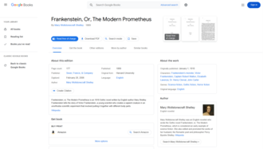

Google Books
Source: https://en.wikipedia.org/wiki/Google_Books
Category: company__depth2
Depth: 2
Summary
Google Books, formerly known as Google Book Search, Google Print, and by its code name Project Ocean, is a service provided by Google that searches the full text of books and magazines that Google has scanned, converted to text using optical character recognition (OCR), and stored in its digital database. Books are provided either by publishers and authors through the Google Books Partner Program or by Google's library partners through the Library Project. Additionally, Google has partnered with a number of magazine publishers to digitize their archives.
Images

Full Article
Books search services from Google
"Google Print" redirects here; not to be confused with Google Cloud Print.
This article is about Google's book search engine. For Google's e-book service, see Google Play Books. For the children's book, see The Google Book.
Google Books, formerly known as Google Book Search, Google Print, and by its code name Project Ocean, is a service provided by Google that searches the full text of books and magazines that Google has scanned, converted to text using optical character recognition (OCR), and stored in its digital database. Books are provided either by publishers and authors through the Google Books Partner Program or by Google's library partners through the Library Project. Additionally, Google has partnered with a number of magazine publishers to digitize their archives.
The Publisher Program was first known as Google Print when it was introduced at the Frankfurt Book Fair in October 2004. The Google Books Library Project, which scans works in the collections of library partners and adds them to the digital inventory, was announced in December 2004.
The Google Books initiative has been hailed for its potential to offer unprecedented access to what may become the largest online body of human knowledge and promoting the democratization of knowledge. However, it has also been criticized for potential copyright violations, and lack of editing to correct the many errors introduced into the scanned texts by the OCR process.
As of October 2019[update], Google celebrated 15 years of Google Books and provided the number of scanned books as more than 40 million titles.
Google estimated in 2010 that there were about 130 million distinct titles in the world, and stated that it intended to scan all of them. However, the scanning process in American academic libraries has slowed since the 2000s. Google Book's scanning efforts have been subject to litigation, including Authors Guild v. Google, a class-action lawsuit in the United States, decided in Google's favor (see below). This was a major case that came close to changing copyright practices for orphan works in the United States. A 2023 study by scholars from the University of California, Berkeley, and Northeastern University's business schools found that Google Books's digitization of books has led to increased sales for the physical versions of the books.
Details
Results from Google Books show up in both the universal Google Search and in the dedicated Google Books search website (books.google.com).
In response to search queries, Google Books allows users to view full pages from books in which the search terms appear if the book is out of copyright or if the copyright owner has given permission. If Google believes the book is still under copyright, a user sees "snippets" of text around the queried search terms. All instances of the search terms in the book text appear with a yellow highlight.
The four access levels used on Google Books are:
- Full view: Books in the public domain are available for "full view" and can be downloaded for free. In-print books acquired through the Partner Program are also available for full view if the publisher has given permission, although this is rare.
- Preview: For in-print books where permission has been granted, the number of viewable pages is limited to a "preview" set by a variety of access restrictions and security measures, some based on user-tracking. Usually, the publisher can set the percentage of the book available for preview. Users are restricted from copying, downloading or printing book previews. A watermark reading "Copyrighted material" appears at the bottom of pages. All books acquired through the Partner Program are available for preview.
- Snippet view: A "snippet view" – two to three lines of text surrounding the queried search term – is displayed in cases where Google does not have permission of the copyright owner to display a preview. This could be because Google cannot identify the owner or the owner declined permission. If a search term appears many times in a book, Google displays no more than three snippets, thus preventing the user from viewing too much of the book. Also, Google does not display any snippets for certain reference books, such as dictionaries, where the display of even snippets can harm the market for the work. Google maintains that no permission is required under copyright law to display the snippet view.
- No preview: Google also displays search results for books that have not been digitized. As these books have not been scanned, their text is not searchable and only the metadata such as the title, author, publisher, number of pages, ISBN, subject and copyright information, and in some cases, a table of contents and book summary is available. In effect, this is similar to an online library card catalog.
In response to criticism from groups such as the American Association of Publishers and the Authors Guild, Google announced an opt-out policy in August 2005, through which copyright owners could provide a list of titles that they do not want scanned, and the request would be respected. The company also stated that it would not scan any in-copyright books between August and 1 November 2005, to provide the owners with the opportunity to decide which books to exclude from the Project. Thus, copyright owners have three choices with respect to any work:
- They can participate in the Partner Program to make a book available for preview or full view, in which case it would share revenue derived from the display of pages from the work in response to user queries.
- They can let Google scan the book under the Library Project and display snippets in response to user queries.
- They can opt out of the Library Project, in which case Google will not scan the book. If the book has already been scanned, Google will reset its access level as 'No preview'.
Most scanned works are no longer in print or commercially available.
In addition to procuring books from libraries, Google also obtains books from its publisher partners, through the "Partner Program" – designed to help publishers and authors promote their books. Publishers and authors submit either a digital copy of their book in EPUB or PDF format, or a print copy to Google, which is made available on Google Books for preview. The publisher can control the percentage of the book available for preview, with the minimum being 20%. They can also choose to make the book fully viewable, and even allow users to download a PDF copy. Books can also be made available for sale on Google Play. Unlike the Library Project, this does not raise any copyright concerns as it is conducted pursuant to an agreement with the publisher. The publisher can choose to withdraw from the agreement at any time.
For many books, Google Books displays the original page numbers. However, Tim Parks, writing in The New York Review of Books in 2014, noted that Google had stopped providing page numbers for many recent publications (likely the ones acquired through the Partner Program) "presumably in alliance with the publishers, in order to force those of us who need to prepare footnotes to buy paper editions."
Scanning of books
The project began in 2002 under the codename Project Ocean. Google co-founder Larry Page had always had an interest in digitizing books. When he and Marissa Mayer began experimenting with book scanning in 2002, it took 40 minutes for them to digitize a 300-page book. But soon after the technology had been developed to the extent that scanning operators could scan up to 6000 pages an hour.
Google established designated scanning centers to which books were transported by trucks. The stations could digitize at the rate of 1,000 pages per hour. The books were placed in a custom-built mechanical cradle that adjusted the book spine in place while an array of lights and optical instruments scanned the two open pages. Each page would have two cameras directed at it capturing the image, while a range finder LIDAR overlaid a three-dimensional laser grid on the book's surface to capture the curvature of the paper. A human operator would turn the pages by hand, using a foot pedal to take the photographs. With no need to flatten the pages or align them perfectly, Google's system not only reached a remarkable efficiency and speed but also helped protect the fragile collections from being over-handled. Afterwards, the crude images went through three levels of processing: first, de-warping algorithms used the LIDAR data fix the pages' curvature. Then, optical character recognition (OCR) software transformed the raw images into text, and, lastly, another round of algorithms extracted page numbers, footnotes, illustrations and diagrams.
Many of the books are scanned using a customized Elphel 323 camera at a rate of 1,000 pages per hour. A patent awarded to Google in 2009 revealed that Google had come up with an innovative system for scanning books that uses two cameras and infrared light to automatically correct for the curvature of pages in a book. By constructing a 3D model of each page and then "de-warping" it, Google is able to present flat-looking pages without having to really make the pages flat, which requires the use of destructive methods such as unbinding or glass plates to individually flatten each page, which is inefficient for large scale scanning.
Google decided to omit color information in favour of better spatial resolution, as most out-of-copyright books at the time did not contain colors. Each page image was passed through algorithms that distinguished the text and illustration regions. Text regions were then processed via OCR to enable full-text searching. Google expended considerable resources in coming up with optimal compression techniques, aiming for high image quality while keeping the file sizes minimal to enable access by internet users with low bandwidth.
Website functionality
For each work, Google Books automatically generates an overview page. This page displays information extracted from the book—its publishing details, a high frequency word map, the table of contents—as well as secondary material, such as summaries, reader reviews (not readable in the mobile version of the website), and links to other relevant texts. A visitor to the page, for instance, might see a list of books that share a similar genre and theme, or they might see a list of current scholarship on the book. This content, moreover, offers interactive possibilities for users signed into their Google account. They can export the bibliographic data and citations in standard formats, write their own reviews, add it to their library to be tagged, organized, and shared with other people. Thus, Google Books collects these more interpretive elements from a range of sources, including the users, third-party sites like Goodreads, and often the book's author and publisher.
In fact, to encourage authors to upload their own books, Google has added several functionalities to the website. The authors can allow visitors to download their ebook for free, or they can set their own purchase price. They can change the price back and forth, offering discounts whenever it suits them. Also, if a book's author chooses to add an ISBN, LCCN or OCLC record number, the service will update the book's url to include it. Then, the author can set a specific page as the link's anchor. This option makes their book more easily discoverable.
Ngram Viewer
Main article: Google Ngram Viewer
The Ngram Viewer is a service connected to Google Books that graphs the frequency of word usage across their book collection. The service is important for historians and linguists as it can provide an inside look into human culture through word use throughout time periods. This program has fallen under criticism because of errors in the metadata used in the program.
Content issues and criticism
The project has received criticism that its stated aim of preserving orphaned and out-of-print works is at risk due to scanned data having errors and such problems not being solved.
Scanning errors
The scanning process is subject to errors. For example, some pages may be unreadable, upside down, or in the wrong order. Scholars have even reported crumpled pages, obscuring thumbs and fingers, and smeared or blurry images. On this issue, a declaration from Google at the end of scanned books says:
The digitization at the most basic level is based on page images of the physical books. To make this book available as an ePub formatted file we have taken those page images and extracted the text using Optical Character Recognition (or OCR for short) technology. The extraction of text from page images is a difficult engineering task. Smudges on the physical books' pages, fancy fonts, old fonts, torn pages, etc. can all lead to errors in the extracted text. Imperfect OCR is only the first challenge in the ultimate goal of moving from collections of page images to extracted-text based books. Our computer algorithms also have to automatically determine the structure of the book (what are the headers and footers, where images are placed, whether text is verse or prose, and so forth).
Getting this right allows us to render the book in a way that follows the format of the original book. Despite our best efforts you may see spelling mistakes, garbage characters, extraneous images, or missing pages in this book. Based on our estimates, these errors should not prevent you from enjoying the content of the book. The technical challenges of automatically constructing a perfect book are daunting, but we continue to make enhancements to our OCR and book structure extraction technologies.
In 2009, Google stated that they would start using reCAPTCHA to help fix the errors found in Google Book scans. This method would only improve scanned words that are hard to recognize because of the scanning process and cannot solve errors such as turned pages or blocked words.
Scanning errors have inspired works of art such as published collections of anomalous pages and a Tumblr blog.
Errors in metadata
Scholars have frequently reported rampant errors in the metadata information on Google Books – including misattributed authors and erroneous dates of publication. Geoffrey Nunberg, a linguist researching on the changes in word usage over time noticed that a search for books published before 1950 and containing the word "internet" turned up an unlikely 527 results. Woody Allen is mentioned in 325 books ostensibly published before he was born. Google responded to Nunberg by blaming the bulk of errors on outside contractors.
Other metadata errors reported include publication dates before the author's birth (e.g. 182 works by Charles Dickens prior to his birth in 1812); incorrect subject classifications (an edition of Moby Dick found under "computers", a biography of Mae West classified under "religion"), conflicting classifications (10 editions of Whitman's Leaves of Grass all classified as both "fiction" and "nonfiction"), incorrectly spelled titles, authors, and publishers (Moby Dick: or the White "Wall"), and metadata for one book incorrectly appended to a completely different book (the metadata for an 1818 mathematical work leads to a 1963 romance novel).
A review of the author, title, publisher, and publication year metadata elements for 400 randomly selected Google Books records was undertaken. The results show 36% of sampled books in the digitization project contained metadata errors. This error rate is higher than one would expect to find in a typical library online catalog.
The overall error rate of 36.75% found in this study suggests that Google Books' metadata has a high rate of error. While "major" and "minor" errors are a subjective distinction based on the somewhat indeterminate concept of "findability", the errors found in the four metadata elements examined in this study should all be considered major.
Metadata errors based on incorrect scanned dates has made research using the Google Books Project database difficult. According to a 2009 article by academic Geoffrey Nunberg Google was aware of these errors and working towards fixing them.
Language issues
Some European politicians and intellectuals have criticized Google's effort on linguistic imperialism grounds. They argue that because the vast majority of books proposed to be scanned are in English, it will result in disproportionate representation of natural languages in the digital world. German, Russian, French, and Spanish, for instance, are popular languages in scholarship. The disproportionate online emphasis on English, however, could shape access to historical scholarship, and, ultimately, the growth and direction of future scholarship. Among these critics is Jean-Noël Jeanneney, the former president of the Bibliothèque nationale de France.
Google Books versus Google Scholar
While Google Books has digitized large numbers of journal back issues, its scans do not include the metadata required for identifying specific articles in specific issues. This has led the makers of Google Scholar to start their own program to digitize and host older journal articles (in agreement with their publishers).
Library partners
The Google Books Library Project is aimed at scanning and making searchable the collections of several major research libraries. Along with bibliographic information, snippets of text from a book are often viewable. If a book is out of copyright and in the public domain, the book is fully available to read or download.
In-copyright books scanned through the Library Project are made available on Google Books for snippet view. Regarding the quality of scans, Google acknowledges that they are "not always of sufficiently high quality" to be offered for sale on Google Play. Also, because of supposed technical constraints, Google does not replace scans with higher quality versions that may be provided by the publishers.
The project is the subject of the Authors Guild v. Google lawsuit, filed in 2005 and ruled in favor of Google in 2013, and again, on appeal, in 2015.
Copyright owners can claim the rights for a scanned book and make it available for preview or full view (by "transferring" it to their Partner Program account), or request Google to prevent the book text from being searched.
The number of institutions participating in the Library Project has grown since its inception.
Initial partners
- Harvard University, Harvard University Library
- The Harvard University Library and Google conducted a pilot throughout 2005. The project continued, with the aim of increasing online access to the holdings of the Harvard University Library, which included more than 15.8 million volumes. While physical access to Harvard's library materials is generally restricted to current Harvard students, faculty, researchers and visiting scholars, the Harvard-Google Project was designed to enable both members of the Harvard community and users everywhere to discover works in the Harvard collection.
- University of Michigan, University of Michigan Library - As of March 2012, 5.5 million volumes were scanned.
- New York Public Library (NYPL) - NYPL worked with Google to offer a collection of its public domain books, scanned in their entirety and made available online for free from NYPL's website and Google. More than 400,000 books have been digitized.
- University of Oxford, Bodleian Library
- Stanford University, Stanford University Libraries (SULAIR)
Additional partners
Other institutional partners have joined the project since the partnership was first announced:
- Austrian National Library
- Bavarian State Library
- Bibliothèque municipale de Lyon
- Big Ten Academic Alliance
- Columbia University, Columbia University Library System
- Complutense University of Madrid
- Cornell University, Cornell University Library
- Ghent University, Ghent University Library/Boekentoren
- Keio University, Keio Media Centers (Libraries)
- National Library of Catalonia
- Princeton University, Princeton University Library
- University of California, California Digital Library
- University of Lausanne, Cantonal and University Library of Lausanne
- University of Mysore, Mysore University Library
- The partnership was for digitizing 800,000 texts, including manuscripts written on palm leaves dating back to eighth century.
- University of Texas at Austin, University of Texas Libraries - The partnership was for digitizing the library's Latin American collection – about half a million volumes.
- University of Virginia, University of Virginia Library
- University of Wisconsin–Madison, University of Wisconsin Libraries - As of March 2012, about 600,000 volumes had been scanned.
History
2002: A group of team members at Google officially launch the "secret 'books' project." Google founders Sergey Brin and Larry Page came up with the idea that later became Google Books while still graduate students at Stanford in 1996. The history page on the Google Books website describes their initial vision for this project: "in a future world in which vast collections of books are digitized, people would use a 'web crawler' to index the books' content and analyze the connections between them, determining any given book's relevance and usefulness by tracking the number and quality of citations from other books." This team visited the sites of some of the larger digitization efforts at that time including the Library of Congress's American Memory Project, Project Gutenberg, and the Universal Library to find out how they work, as well as the University of Michigan, Page's alma mater, and the base for such digitization projects as JSTOR and Making of America. In a conversation with the at that time University President Mary Sue Coleman, when Page found out that the university's current estimate for scanning all the library's volumes was 1,000 years, Page reportedly told Coleman that he "believes Google can help make it happen in six."
2003: The team works to develop a high-speed scanning process as well as software for resolving issues in odd type sizes, unusual fonts, and "other unexpected peculiarities."
December 2004: Google signaled an extension to its Google Print initiative known as the Google Print Library Project. Google announced partnerships with several high-profile university and public libraries, including the University of Michigan, Harvard (Harvard University Library), Stanford (Green Library), Oxford (Bodleian Library), and the New York Public Library. According to press releases and university librarians, Google planned to digitize and make available through its Google Books service approximately 15 million volumes within a decade. The announcement soon triggered controversy, as publisher and author associations challenged Google's plans to digitize, not just books in the public domain, but also titles still under copyright.
September–October 2005: Two lawsuits against Google charge that the company has not respected copyrights and has failed to properly compensate authors and publishers. One is a class action suit on behalf of authors (Authors Guild v. Google, September 20, 2005) and the other is a civil lawsuit brought by five large publishers and the Association of American Publishers. (McGraw Hill v. Google, October 19, 2005)
November 2005: Google changed the name of this service from Google Print to Google Book Search. Its program enabling publishers and authors to include their books in the service was renamed Google Books Partner Program, and the partnership with libraries became Google Books Library Project.
2006: Google added a "download a pdf" button to all its out-of-copyright, public domain books. It also added a new browsing interface along with new "About this Book" pages.
August 2006: The University of California System announced that it would join the Books digitization project. This includes a portion of the 34 million volumes within the approximately 100 libraries managed by the System.
September 2006: The Complutense University of Madrid became the first Spanish-language library to join the Google Books Library Project.
October 2006: The University of Wisconsin–Madison announced that it would join the Book Search digitization project along with the Wisconsin Historical Society Library. Combined, the libraries have 7.2 million holdings.
November 2006: The University of Virginia joined the project. Its libraries contain more than five million volumes and more than 17 million manuscripts, rare books and archives.
January 2007: The University of Texas at Austin announced that it would join the Book Search digitization project. At least one million volumes would be digitized from the university's 13 library locations.
March 2007: The Bavarian State Library announced a partnership with Google to scan more than a million public domain and out-of-print works in German as well as English, French, Italian, Latin, and Spanish.
May 2007: A book digitizing project partnership was announced jointly by Google and the Cantonal and University Library of Lausanne.
May 2007: The Boekentoren Library of Ghent University announced that it would participate with Google in digitizing and making digitized versions of 19th century books in the French and Dutch languages available online.
May 2007: Mysore University announces Google will digitize over 800,000 books and manuscripts–including around 100,000 manuscripts written in Sanskrit or Kannada on both paper and palm leaves.
June 2007: The Committee on Institutional Cooperation (rebranded as the Big Ten Academic Alliance in 2016) announced that its twelve member libraries would participate in scanning 10 million books over the course of the next six years.
July 2007: Keio University became Google's first library partner in Japan with the announcement that they would digitize at least 120,000 public domain books.
August 2007: Google announced that it would digitize up to 500,000 both copyrighted and public domain items from Cornell University Library. Google would also provide a digital copy of all works scanned to be incorporated into the university's own library system.
September 2007: Google added a feature that allows users to share snippets of books that are in the public domain. The snippets may appear exactly as they do in the scan of the book, or as plain text.
September 2007: Google debuted a new feature called "My Library" which allows users to create personal customized libraries, selections of books that they can label, review, rate, or full-text search.
December 2007: Columbia University was added as a partner in digitizing public domain works.
May 2008: Microsoft tapered off and planned to end its scanning project, which had reached 750,000 books and 80 million journal articles.
October 2008: A settlement was reached between the publishing industry and Google after two years of negotiation. Google agreed to compensate authors and publishers in exchange for the right to make millions of books available to the public.
October 2008: The HathiTrust "Shared Digital Repository" (later known as the HathiTrust Digital Library) is launched jointly by the Committee on Institutional Cooperation and the 11 university libraries in the University of California system, all of which were Google partner libraries, in order to archive and provide academic access to books from their collections scanned by Google and others.
November 2008: Google reached the 7 million book mark for items scanned by Google and by their publishing partners. 1 million were in full preview mode and 1 million were fully viewable and downloadable public domain works. About five million were out of print.
December 2008: Google announced the inclusion of magazines in Google Books. Titles include New York Magazine, Ebony, and Popular Mechanics
February 2009: Google launched a mobile version of Google Book Search, allowing iPhone and Android phone users to read over 1.5 million public domain works in the US (and over 500,000 outside the US) using a mobile browser. Instead of page images, the plain text of the book is displayed.
May 2009: At the annual BookExpo convention in New York, Google signaled its intent to introduce a program that would enable publishers to sell digital versions of their newest books direct to consumers through Google.
December 2009: A French court shut down the scanning of copyrighted books published in France, saying this violated copyright laws. It was the first major legal loss for the scanning project.
April 2010: Visual artists were not included in the previous lawsuit and settlement, are the plaintiff groups in another lawsuit, and say they intend to bring more than just Google Books under scrutiny. "The new class action," read the statement, "goes beyond Google's Library Project, and includes Google's other systematic and pervasive infringements of the rights of photographers, illustrators and other visual artists."
May 2010: It was reported that Google would launch a digital book store called Google Editions. It would compete with Amazon, Barnes & Noble, Apple and other electronic book retailers with its own e-book store. Unlike others, Google Editions would be completely online and would not require a specific device (such as kindle, Nook, or iPad).
June 2010: Google passed 12 million books scanned.
August 2010: It was announced that Google intends to scan all known existing 129,864,880 books within a decade, amounting to over 4 billion digital pages and 2 trillion words in total.
December 2010: Google eBooks (Google Editions) was launched in the US.
December 2010: Google launched the Ngram Viewer, which collects and graphs data on word usage across its book collection.
March 2011: A federal judge rejected the settlement reached between the publishing industry and Google.
March 2012: Google passed 20 million books scanned.
March 2012: Google reached a settlement with publishers.
January 2013: The documentary Google and the World Brain was shown at the Sundance Film Festival.
November 2013: Ruling in Authors Guild v. Google, US District Judge Denny Chin sides with Google, citing fair use. The authors said they would appeal.
October 2015: The appeals court sided with Google, declaring that Google did not violate copyright law. According to the New York Times, Google has scanned more than 25 million books.
April 2016: The US Supreme Court declined to hear the Authors Guild's appeal, which means the lower court's decision stood, and Google would be allowed to scan library books and display snippets in search results without violating the law.
Status
Google has been quite secretive regarding its plans on the future of the Google Books project. Scanning operations had been slowing down since at least 2012, as confirmed by the librarians at several of Google's partner institutions. At University of Wisconsin, the speed had reduced to less than half of what it was in 2006. However, the librarians have said that the dwindling pace could be a natural result of maturation of the project – initially stacks of books were entirely taken up for scanning whereas now only the titles that had not already been scanned needed to be considered. The company's own Google Books timeline page did not mention anything after 2007 even in 2017, and the Google Books blog was merged into the Google Search blog in 2012.
Despite winning the decade-long litigation in 2017, The Atlantic has said that Google has "all but shut down its scanning operation." In April 2017, Wired reported that there were only a few Google employees working on the project, and new books were still being scanned, but at a significantly lower rate. It commented that the decade-long legal battle had caused Google to lose its ambition.
Legal issues
Further information: Authors Guild, Inc. v. Google, Inc.
Through the project, library books were being digitized somewhat indiscriminately regardless of copyright status, which led to a number of lawsuits against Google. By the end of 2008, Google had reportedly digitized over seven million books, of which only about one million were works in the public domain. Of the rest, one million were in copyright and in print, and five million were in copyright but out of print. In 2005, a group of authors and publishers brought a major class-action lawsuit against Google for infringement on the copyrighted works. Google argued that it was preserving "orphaned works" – books still under copyright, but whose copyright holders could not be located.
The Authors Guild and Association of American Publishers separately sued Google in 2005 for its book project, citing "massive copyright infringement." Google countered that its project represented a fair use and is the digital age equivalent of a card catalog with every word in the publication indexed. The lawsuits were consolidated, and eventually a settlement was proposed. The settlement received significant criticism on a wide variety of grounds, including antitrust, privacy, and inadequacy of the proposed classes of authors and publishers. The settlement was eventually rejected, and the publishers settled with Google soon after. The Authors Guild continued its case, and in 2011 their proposed class was certified. Google appealed that decision, with a number of amici asserting the inadequacy of the class, and the Second Circuit rejected the class certification in July 2013, remanding the case to the District Court for consideration of Google's fair use defense.
In 2015 Authors Guild filed another appeal against Google to be considered by the 2nd U.S. Circuit Court of Appeals in New York. Google won the case unanimously based on the argument that they were not showing people the full texts but instead snippets, and they are not allowing people to illegally read the book. In a report, courts stated that they did not infringe on copyright laws, as they were protected under the fair use clause.
Authors Guild tried again in 2016 to appeal the decision and this time took their case to be considered by the Supreme Court. The case was rejected, leaving the Second Circuit's decision on the case intact, meaning that Google did not violate copyright laws. This case also set a precedent for other similar cases in regards to fair use laws, as it further clarified the law and expanded it. Such clarification affects other scanning projects similar to Google.
Other lawsuits followed the Authors Guild's lead. In 2006 a German lawsuit, previously filed, was withdrawn. In June 2006, Hervé de la Martinière, a French publisher known as La Martinière and Éditions du Seuil, announced its intention to sue Google France. In 2009, the Paris Civil Court awarded 300,000 EUR (approximately 430,000 USD) in damages and interest and ordered Google to pay 10,000 EUR a day until it removes the publisher's books from its database. The court wrote, "Google violated author copyright laws by fully reproducing and making accessible" books that Seuil owns without its permission and that Google "committed acts of breach of copyright, which are of harm to the publishers". Google said it will appeal. Syndicat National de l'Edition, which joined the lawsuit, said Google has scanned about 100,000 French works under copyright.
In December 2009, Chinese author Mian Mian filed a civil lawsuit for $8,900 against Google for scanning her novel, Acid Lovers. This is the first such lawsuit to be filed against Google in China. Also, in November that year, the China Written Works Copyright Society (CWWCS) accused Google of scanning 18,000 books by 570 Chinese writers without authorization. Google agreed on Nov 20 to provide a list of Chinese books it had scanned, but the company refused to admit having "infringed" copyright laws.[unreliable source?]
In March 2007, Thomas Rubin, associate general counsel for copyright, trademark, and trade secrets at Microsoft, accused Google of violating copyright law with their book search service. Rubin specifically criticized Google's policy of freely copying any work until notified by the copyright holder to stop.
Google licensing of public domain works is also an area of concern due to using of digital watermarking techniques with the books. Some published works that are in the public domain, such as all works created by the U.S. Federal government, are still treated like other works under copyright, and therefore locked after 1922.
Since at least 2014, Google has allowed authors and publishers to remove book previews from Google Books upon request.
Similar projects
- Project Gutenberg is a volunteer effort to digitize and archive cultural works, to "encourage the creation and distribution of eBooks". It was founded in 1971 by Michael S. Hart and is the oldest digital library. As of October 3, 2015[update], Project Gutenberg reached 50,000 items in its collection.
- Internet Archive is a non-profit which digitizes over 1000 books a day, as well as mirrors books from Google Books and other sources. As of May 2011[update], it hosted over 2.8 million public domain books, greater than the approximate 1 million public domain books at Google Books. Open Library, a sister project of Internet Archive, lends 80,000 scanned and purchased commercial ebooks to the visitors of 150 libraries.
- HathiTrust maintains HathiTrust Digital Library since October 13, 2008, which preserves and provides access to material scanned by Google, some of the Internet Archive books, and some scanned locally by partner institutions. As of May 2010[update], it includes about 6 million volumes, over 1 million of which are public domain (at least in the US).
- ACLS Humanities E-Book, an online collection of over 5,400 books of high quality in the humanities and related social sciences, accessible through institutional subscription.
- Microsoft funded the scanning of 300,000 books to create Live Search Books in late 2006. It ran until May 2008, when the project was abandoned and the books were made freely available on the Internet Archive.
- The National Digital Library of India (NDLI) is a project under Ministry of Human Resource Development, India. The objective is to integrate several national and international digital libraries in one single web-portal. The NDLI provides free of cost access to many books in English and the Indian languages.
- Europeana links to roughly 10 million digital objects as of 2010[update], including video, photos, paintings, audio, maps, manuscripts, printed books, and newspapers from the past 2,000 years of European history from over 1,000 archives in the European Union.
- Gallica from the French National Library links to about 4,000,000 digitized books, newspapers, manuscripts, maps and drawings, etc. Created in 1997, the digital library continues to expand at a rate of about 5000 new documents per month. Since the end of 2008, most of the new scanned documents are available in image and text formats. Most of these documents are written in French.
- Wikisource
- Runivers
See also
 Internet
Internet-
A9.com, Amazon.com's book search
- Book Rights Registry
- Digital library
- List of digital library projects
- Universal library
- National Electronic Library

References
Further reading
- Hoffmann, Anna Lauren (2016). "Google Books, Libraries, and Self-Respect: Information Justice beyond Distributions". Library Quarterly. 86: 76–92. doi:10.1086/684141. S2CID 146482065.
- Jeanneney, Jean-Noël (2008). Google and the Myth of Universal Knowledge: A View from Europe. Chicago, IL: University of Chicago Press.
- Marcum, Deanna B.; Schonfeld, Roger C. (2021). Along Came Google: A History of Library Digitization. Princeton: Princeton University Press. ISBN 9780691172712.
External links

Wikidata has the property:
 Google Books ID (P675) (see uses)
Google Books ID (P675) (see uses)


Wikimedia Commons has media related to Google Books.
- Official website

- About Google Books
- Jones, Elisabeth (May 14, 2013). "New Google Books Library Project Timeline: Now With (more) Citations!".
- Darnton, Robert (February 12, 2009). "Google & the Future of Books". New York Review of Books. Vol. 56, no. 2. Archived from the original on January 25, 2009.
- "Public Domain Archive and Reprints Service". Public Domain Reprints.
- Somers, James (April 20, 2017). "Torching the Modern-Day Library of Alexandria". The Atlantic.
- Toobin, Jeffrey (February 5, 2007). "Google's Moon Shot". The New Yorker. Archived from the original on February 2, 2007.
| - v - t - e Google Search | |
|---|---|
| Timeline of Google Search | |
| Features | - AI Overviews - AI Mode - Knowledge Graph - SafeSearch - SearchWiki - Voice Search - Google Personalized Search |
| Component algorithms and updates | - Googlebot - Hummingbird - Mobilegeddon - PageRank - Matrix - Panda - Penguin - Pigeon - RankBrain |
| Special purpose search engines | - Google Dataset Search - Google Books - Google Images - Google Finance - Google News - Google News Archive - Google Scholar - Google Shopping - Dragonfly - Google Blog Search - Google Code Search |
| Data insights | - Google Books Ngram Viewer - Google Trends - Google Insights for Search - Year in Search |
| Developer and business tools | - Google Programmable Search Engine - Google Search Console - Get Your Business Online |
| Related | - "Reunion" - Google Search Appliance - FairSearch |
| - v - t - e Ebooks | |
|---|---|
| Formats | - ePub - FictionBook - CBR/CBZ - Kindle File Format - Mobipocket - PDF - Plain text - IBA |
| Reading | |
| Editing | - ABBYY FineReader - AbiWord - Adobe InDesign - Adobe RoboHelp - Aquafadas - Atlantis Word Processor - Booktype - Calibre - Calligra Author - Collabora Online - eXeLearning - HelpNDoc - iBooks Author - iStudio Publisher - LaTeX - LibreOffice - MadCap Flare - Oxygen XML Editor - PagePlus - Pages - QuarkXPress - Scrivener - Sigil - Writer2epub |
| Vendors | |
| Related | - Academic journal publishing reform - Books - Braille e-book - Comparison of ebook readers - Comparison of iOS ebook reader software - Comparison of Android ebook reader software - E-book lending - Electronic publishing - iBooks Author Conference - International Digital Publishing Forum - Kindle single - OPDS - Reflowable document - Self-publishing - Semantic publishing |
| Authority control databases Edit this at Wikidata | |
|---|---|
| International | - GND |
| National | - Czech Republic |